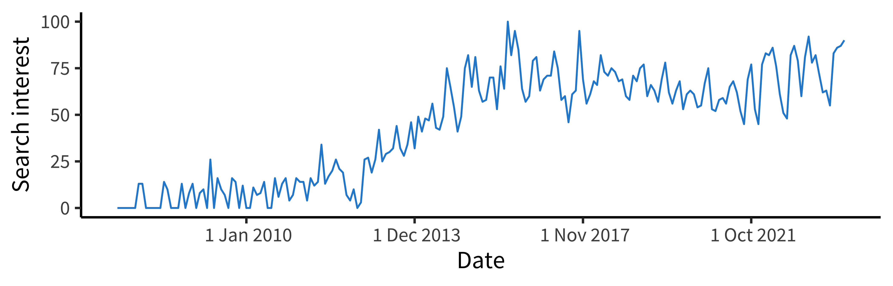
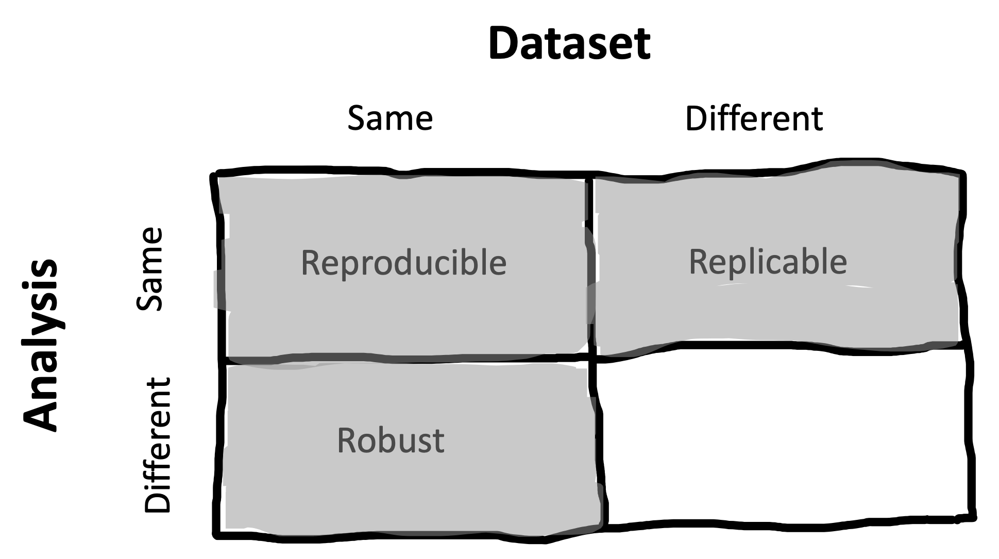
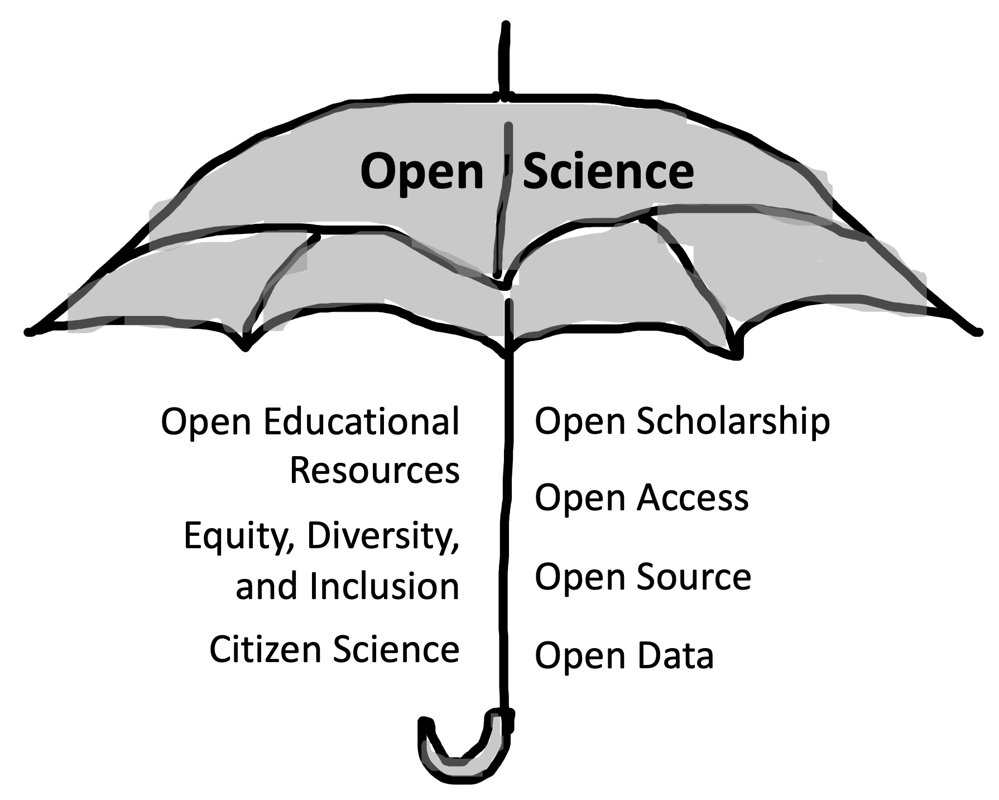

3 Replication
learning goals
- Define and distinguish reproducibility and replicability
- Synthesize the meta-scientific literature on replication and the causes of replication failures
- Reason about the relation of replication to theory building
In the previous chapters, we introduced experiments, their connection with causal inference, and their role in building psychological theory. In principle, repeated experimental work combined with theory building should yield strong research programs that explain and predict phenomena with increasing scope.
Yet in recent years there has been an increasing recognition that this idealized view of science might not be a good description of what we actually see when we look at the psychology literature. Many classic findings may be wrong, or at least overstated. Their statistical tests might not be trustworthy. The actual numbers are even wrong in many papers! And even when experimental findings are “real”, they may not generalise broadly to different people and different situations.
How do we know about these problems? A burgeoning field called meta-science is providing the evidence. Meta-science is research about research, for example investigating how often findings in a literature can be successfully built on, or trying to figure out how widespread some negative practice is. Meta-science allows us to go beyond one-off anecdotes about a particular set of flawed results or rumors about bad practices. Perhaps the most obvious sign that something is wrong is that when independent scientists team up in meta-science projects and try to repeat previous studies, they often do not get the same results.

Before we begin reviewing this evidence, let’s discuss the different ways in which a scientific finding can be repeated. Figure 3.1 gives us a basic starting point for our definitions (based on "Publishing a reproducible paper" by Kirstie Whitaker). For a particular finding in a paper, if we take the same data, do the same analysis, and get the same result, we call that finding reproducible (sometimes, analytically or computationally reproducible. If we collect new data using the same methods, do the same analysis, and get the same result, we call that a replication and say that the finding is replicable. If we do a different analysis with the same data, we call this a robustness check and if we get a similar result, we say that the finding is robust.1 We leave the last quadrant empty because there’s no specific term for it in the literature – the eventual goal is to draw generalizable conclusions but this term means more than just having a finding that is reproducible and replicable.
1 You might have observed that a lot of work is being done here by the word “same.” How do we operationalize same-ness for experimental procedures, statistical analyses, samples, or results? These are difficult questions that we’ll touch on below. Keep in mind that there’s no single answer and so these terms are always going to helpful guides rather than exact labels.
In this chapter, we’ll primarily discuss reproducibility and replicability; discussions of robustness and generalizability will be taken up in Chapters 11 and 10 respectively. We’ll start out by reviewing key concepts around reproducibility and replicability as well as some important meta-science findings. This literature suggests that when you read an average psychology paper, your default expectation should be that it might not replicate!
We’ll then discuss some of the main reasons why findings might not replicate – especially analytic flexibility and publication bias. We end by taking up the issue of how reproducibility and replicability relate to theory building in psychology, and the role of open science in this discussion. This discussion focuses on the key role of transparency (one of our major book themes) in providing supports for theory building.
case study
The Open Science Collaboration
Around 2011, we were teaching our Experimental Methods course for the first time, based on a course model that we had worked on with Rebecca Saxe (Frank and Saxe 2012). The idea was to introduce students to the nuts and bolts of research by having them run replications. A guy named Brian Nosek was on sabbatical nearby, and over coffee we learned that he was starting up an ambitious project to replicate a large sample of studies published in top psychology journals in 2008.
In the course that year we chose replication projects from the sample that Nosek had told us about. Four of these projects were executed very well and were nominated by the course TAs for inclusion in the broader project. A few years later, when the final group of 100 replication studies was completed, we got a look at the results, shown in Figure 3.2.

The resulting meta-science paper, which we and others refer to as the “replication project in psychology” (RPP), made a substantial impression on both psychologists and the broader research community, defining both a field of psychology meta-science studies and providing a template for many-author collaborative projects (Open Science Collaboration 2015). But the most striking thing was the result: disappointingly, only around a third of the replications had similar findings to the original studies. The others yielded smaller effects that were not statistically significant in the replication sample (almost all of the original studies were significant). RPP provided the first large-scale evidence that there were systematic issues with replicability in the psychology literature.
RPP’s results – and their interpretation – were controversial, however, and much ink was spilled on what these data showed. In particular, critics pointed to different degrees of fidelity between the original studies and the replications; insufficient levels of statistical power and low evidential value in the replications; non-representative sampling of the literature; and difficulties identifying specific statistical outcomes for replication success (Gilbert et al. 2016; Anderson et al. 2016; Etz and Vandekerckhove 2016). In our view, many of these critiques have merit, and you can’t simply interpret the results of RPP as an unbiased estimate of the replicability of results in the literature, contra the title.
And yet, RPP’s results are still important and compelling, and they undeniably changed the direction of the field of psychology. Many good studies are like this – they have flaws but they inspire follow up studies that can address those problems. For several of us personally, working on this project was also transformative in that it showed us the power of collaborative work. Together we could do a study that no one of us had any hope of completing on our own, and potentially make a difference in our field.
3.1 Reproducibility
Scientific papers are full of numbers: sample sizes, measurements, statistical results, and visualizations. For those numbers to have meaning, and for other scientists to be able to verify them, we need to know where they came from (their provenance). The chain of actions that scientists perform on the raw data, all the way through to reporting numbers in their papers, is sometimes called the analysis pipeline. For much of history, scientific papers have only provided a verbal, description of the analysis pipeline, usually with little detail.2
2 The situation is nicely summed up by a prescient quote from Buckheit and Donoho (1995): “… a scientific publication is not the scholarship itself, it is merely advertising of the scholarship. The actual scholarship is the complete software development environment and the complete set of instructions which generated the figures.”
Moreover, researchers typically do not share key research objects from this pipeline, such as the analysis scripts or the raw data (Hardwicke, Thibault, et al. 2021).3 Without code and data, the numbers reported in scientific papers are often not reproducible – an independent scientist cannot repeat all of the steps in the analysis pipeline and get the same results as the original scientists.
3 For many years, professional societies, like the American Psychological Association, have mandated data sharing (https://www.apa.org/ethics/code), but only for purposes of verification, and only “on request” – in other words, scientists could keep data hidden by default and it was their responsibility to share if another scientist requested access. In practice, this kind of policy does not work; data are rarely made available on request (Wicherts et al. 2006). We believe this situation is untenable. We provide a longer argument justifying data sharing in Chapter 4 and discuss some of the practicalities of sharing in Chapter 13.
Reproducibility is desirable for a number of reasons. Without it:
- Errors in calculation or reporting could lead to disparities between the reported result and the actual result,
- Vague verbal descriptions of analytic computations could keep readers from understanding the computations that were actually performed,
- The robustness of data analyses to alternative model specifications cannot be checked, and
- Synthesizing evidence across studies, a key part of building a cumulative body of scientific knowledge (Chapter 16), is much more difficult.
From this list, error detection and correction is probably the most pressing issue. But are errors common? There are plenty of individual instances of errors that are corrected in the published literature (e.g., some of us found an error in Cesana-Arlotti et al. 2018), and we ourselves have made significant analytic errors (e.g., Frank et al. 2013). But these kinds of experiences don’t tell us about the frequency of errors more generally (or the consequences of error for the conclusions that researchers draw).4
4 There is a very interesting discussion of the pernicious role of scientific error on theory building in Gould, Gold, et al. (1996)’s “The Mismeasure of Man.” Gould examines research on racial differences in intelligence and documents how scientific errors that supported racial differences were often overlooked. Errors are often caught asymmetrically; we are more motivated to double-check a result that contradicts our biases.
Estimating the frequency of errors is a meta-scientific issue that researchers have attempted to answer over the years. If errors are frequent, that would suggest a need for changes in our policies and practices to reduce their frequency! Unfortunately, the lack of data availability creates a problem: it’s hard to figure out if calculations are wrong if you can’t check them in the first place. Here’s one clever approach to this issue. In standard American Psychological Association (APA) reporting format, inferential statistics must be reported with three pieces of information: the test statistic, the degrees of freedom for the test, and the \(p\)-value (e.g., \(t(18) = -0.74\), \(p = 0.47\)). Yet these pieces of information are redundant with one another. Thus, reported statistics can be checked for consistency simply by evaluating whether they line up with one another – that is, whether the \(p\)-value recomputed from the \(t\) and degrees of freedom matches the reported value.
Bakker and Wicherts (2011) performed this kind of statistical consistency analysis on a sample of 281 papers, and found that around 18% of statistical results were incorrectly reported. Even more worrisome, around 15% of articles contained at least one decision error – that is, a case where the error changed the direction of the inference that was made (e.g., from significant to insignificant).5 Nuijten et al. (2016) used an automated method called “statcheck”6 to confirm and extend this analysis. They checked \(p\)-values for more than 250,000 psychology papers in the period 1985–2013 and found that around half of all papers contained at least one incorrect \(p\)-value!
5 Confirming Gould’s speculation (see note above), most of the reporting errors that led to decision errors were in line with the researchers’ own hypotheses.
6 Statcheck is now available as a web app (http://statcheck.io) and an R package so that you can check your own manuscripts!
These findings provide a lower bound on the number of errors in the literature and suggest that reproducibility of analyses is likely very important. However, they only address the consistency of statistical reporting. What would happen if we tried to repeat the entire analysis pipeline from start to finish? It’s rather difficult to answer this question at a large scale: firstly, it takes a long time to run a reproducibility check; and secondly, the lack of access to raw data means that for most scientific papers, checking reproducibility is impossible.
Nevertheless, a few years ago a group of us spotted an opportunity to check reproducibility by examining studies published in two journals that either required or encouraged data sharing. Hardwicke et al. (2018) and Hardwicke, Bohn, et al. (2021) first identified studies that shared data, then narrowed those down to studies that shared reusable data (the data were accessible, complete, and comprehensible). For 60 of these articles, we then attempted to reproduce numerical values related to a particular statistical result in the paper. The process was incredibly labor-intensive, with articles typically requiring 5–10 hours of work each. And the results were concerning: the targeted values in only about a third of articles were completely reproducible without help from the original authors! In many cases, after – sometimes extensive – correspondence with the original authors, they provided additional information that was not reported in the original paper. After author contact, the reproducibility success rate improved to 62% (Figure 3.3). The remaining papers appeared to have some values that neither we, nor the original authors, could reproduce. Importantly, we didn’t identify any patterns of non-reproducibility that seriously undermined the conclusions drawn in the original articles; however, other reproducibility studies have found a distressingly high number of decision errors (Artner et al. 2020), albeit with a slightly higher success rate overall.

In sum: transparency is a critical imperative for decreasing the frequency of errors in the published literature. Reporting and computation errors are frequent in the published literature, and the identification of these errors depends on the findings being reproducible. If data are not available, then errors usually cannot be found.
3.2 Replication
Beyond verifying a paper’s original analysis pipeline, we are often interested in understanding whether the study can be replicated – if we repeat the study methods and obtain new data, do we get similar results? To quote from Popper (2005), “the scientifically significant… effect may be defined as that which can be regularly [replicated] by anyone who carries out the appropriate experiment in the way prescribed.”
Replications can be conducted for many reasons (Schmidt 2009). One goal can be to verify that the results of an existing study can be obtained again if the study is conducted again in exactly the same way, to the best of our abilities. A second goal can be to gain a more precise estimate of the effect of interest by conducting a larger replication study, or combining the results of a replication study with the existing study. A third goal can be to investigate whether an effect will persist when, for example, the experimental manipulation is done in a different, but still theory-consistent, manner. Alternatively, we might want to investigate whether the effect persists in a different population. Such replications are often efforts to “replicate and extend,” and are common both when the same research team wants to conduct a sequence of experiments that each build on one another or when a new team wants to build on a result from a paper they have read (Rosenthal 1990).
Much of the meta-science literature (and attendant debate and discussion) has focused on the first goal – simple verification. This focus has been so intense that the term “replication” has become associated with skepticism or even attacks on the foundations of the field. This dynamic is at odds with the role that replication is given in a lot of philosophy of science, where it is assumed to be a typical part of “normal science.”
3.2.1 Conceptual frameworks for replication
The key challenge of replication is invariance – Popper’s stipulation that a replication be conducted “in the way prescribed” in the quote above. That is, what are the features of the world over which a particular observation should be relatively constant, and what are those that are specified as the key ingredients for the effect? Replication is relatively straightforward in the physical and biological sciences, in part because of presupposed theoretical background that allows us to make strong inferences about invariance. If a biologist reports an observation about a particular cell type from an organism, the color of the microscope is presumed not to matter to the observation.
These invariances are far harder to state in psychology, for both the procedure of an experiment and its sample. Procedurally, should the color of the experimental stimulus matter to the measured effect? In some cases yes, in some cases no.7 Yet the task of postulating how a scientific effect should be invariant to lab procedures pales in comparison to the task of postulating how the effect should be invariant across different human populations!8
7 A fascinating study by Baribault et al. (2018) proposes a method for empirically understanding psychological invariances. Treating a subliminal priming effect as their model system, they sampled thousands of “micro-experiments” in which small parameters of their experimental procedure were randomly sampled. These parameters allowed for measurement of their effect of interest, averaging across this irrelevant variation. In their case, it turned out that color did not matter.
8 In some sense, the research program of some branches of the social sciences amounts to an understanding of invariances across human cognition.
A lot is at stake in this discussion. If Dr. Frog publishes a finding with US undergraduates and Dr. Toad then “replicates” the procedure in Germany, to what extent should we be perturbed if the effect is different in magnitude or absent?9 Meta-researchers have made a number of replication taxonomies to try and quantify the degree of methodological consistency between two experiments.
9 Presumably not very much if Dr. Toad gave the original instructions in English instead of in German – that’s another one of these pesky invariances that we are always worrying about!
One influential taxonomy distinguishes between direct replications10 and conceptual replications (Zwaan et al. 2018). Direct replications are those that attempt to reproduce all of the salient features of the prior study, up to whatever invariances the experimenters believe are present (e.g., color of the paint, gender of the experimenter, etc.). In contrast, conceptual replications are typically paradigms that attempt to test the same hypothesis via different operationalizations of the manipulation and/or the measure. We agree with Zwaan et al. (2018): labeling this second type of experiment as a “replication” is a little misleading. Rather, so-called “conceptual replications” are alternative tests of the same part of your theory. Such tests can be extremely valuable, but they serve a different goal than replication.
10 These also get called exact replications sometimes. We think this term is misleading because similarity between two different experiments is always going to be on a gradient, and where you cut this continuum is always going to be a theory-laden decision. One person’s “exact” is another’s “inexact.”
accident report
“Small Telescopes”
We’ve been discussing the question of invariance with respect to procedure and sample, but we haven’t really discussed invariance with respect to the studies’ statistical results. To what extent can we consider two statistical results to be “the same”? Several obvious metrics, including those used by RPP, have important limitations (Simonsohn 2015). For example, if one finding is statistically significant and the other isn’t, they still could have effect sizes that are actually quite close to one another, in part because one might have a larger sample size than the other. Or you could have two significant findings that nevertheless have very different effect sizes.

In a classic study, Schwarz and Clore (1983) reported that participants (N=28) rated their life satisfaction as higher on sunny days than rainy days, suggesting that they mis-attributed temporary happiness about the weather to longer-term life satisfaction. However, when two more recent studies examined very large samples of survey responses, they yielded estimates of the effect that were much smaller. (All of these effects have been standardized so they are on the same scale using a metric called Cohen’s \(d\) that we will introduce more formally in Chapter 5). In one survey, the effect was statistically significant but extremely small; in the other it was essentially zero (Figure 3.4). Using statistical significance as the metric of replication success, you might be tempted to say that the first of these studies was a successful replication and the second was a failed replication.
Simonsohn points out that this interpretation doesn’t make sense, using the analogy of a study’s sample size as a telescope. Following this analogy, Schwarz and Clore had a very small telescope (i.e., a small sample size), and they pointed it in a particular direction and claimed to have observed a planet (i.e., a nonzero effect). Now it might turn out that there was a planet at that location when you look with a much larger telescope (first replication), and it might turn out that there wasn’t (second replication). Regardless, however, the original small telescope was simply not powerful enough to have seen whatever was there. Both studies fail to replicate the original observation, regardless of whether their observed effect was in the same direction.
Following Simonsohn’s example, numerous metrics for replication success have been proposed (Mathur and VanderWeele 2020). The best of these move away from the idea that there is a binary test of whether an individual replication was successful and towards a comparison of the two effects and whether they appear consistent with the same theory. Gelman (2018) suggests the “time reversal” heuristic – rather than thinking of a replication as a success or a failure, consider the alternative world in which the replication study had been performed first and the original study followed it. What would we say then? If we leave behind the idea that the original study has precedence, it makes much more sense to consider the sum total of the evidence across the two. Do they agree or disagree? Taken together, do they support the presence of the effect, or do they present a strong case that it’s present only under certain conditions? Using this approach, it seems pretty clear that the weather mis-attribution effect is, at best, a tiny factor in people’s overall judgments of their life satisfaction.
3.2.2 The meta-science of replication
In RPP, replication teams reported subjectively that 39% of replications were successful, with 36% reporting a significant effect in the same direction as the original. How generalizable is this estimate – and how replicable is psychological research more broadly? Based on the discussion above, we hope we’ve made you skeptical that this is a well-posed question, at least without a lot of additional qualifiers. Any answer is going to have to provide details about the scope of this claim, the definition of replication being used, and the metric for replication success. On the other hand, versions of this question have led to a number of empirical studies that help us better understand the scope of replication issues.
Many subsequent empirical studies of replication have focused on particular subfields or journals, with the goal of informing particular field-specific practices or questions. For example, Camerer et al. (2016) replicated all of the between-subject laboratory articles published in two top economics journals in the period 2011–2014. They found a replication rate of 61% of significant effects in the same direction of the original, higher than the rate in RPP but lower than the naive expectation based on their level of statistical power. Another study attempted to replicate all 21 behavioral experiments published in the journals Science and Nature from 2010–2015, finding a replication rate of 62% significant effects (Camerer et al. 2018).11 While these types of studies do not answer all the questions that were raised about RPP, they suggest that replication rates for top experiments are not as high as we’d like them to be, even when care is taken with the sampling and individual study protocols.
11 This study was notable because they followed a two-step procedure – after an initial round of replications, they followed up on the failures by consulting with the original authors and pursuing extremely large sample sizes. The resulting estimate thus is less subject to many of the critiques of the original RPP paper.
Other scientists working in the same field can often predict when an experiment will fail to replicate. Dreber et al. (2015) showed that prediction markets (where participants bet small sums of real money on replication outcomes) made fairly accurate estimates of replication success in the aggregate. This result has itself now been replicated several times (e.g., in the Camerer et al., 2018 study described earlier). Maybe even more surprisingly, there’s some evidence that machine learning models trained on the text of papers can predict replication success (Yang, Youyou, and Uzzi 2020; Youyou, Yang, and Uzzi 2023), though more work still needs to be done to validate these models and understand the features they use. More generally, these two lines of research suggest the possibility of isolating consistent factors that lead to replication success or failure. (In the next section we consider what these factors are in more depth.)
Although more work still needs to be done to get generalizable estimates of replicability, taken together, the meta-science literature does provide some clarity on what we should expect. Altogether, the chance of a significant finding in a (well-powered) replication study of a generic experiment in social and cognitive psychology is likely somewhere around 56%. Furthermore, the replication effect will likely be on average 53% as large (Nosek et al. 2021).
On the other hand, these large-scale replication studies have substantial limitations as well. With relatively few exceptions, the studies chosen for replication used short, computerized tasks that mostly would fall into the categories of social and cognitive psychology. Further, and perhaps most troubling from the perspective of theory development, they tell us only whether a particular experimental effect can be replicated. They tell us much less about whether the construct that the effect was meant to operationalize is in fact real! We’ll return to the difficult issue of how replication and theory construction relate to one another in the final section of this chapter.
Some have called the narrative that emerges from the sum of these meta-science studies the “replication crisis.” We think of it as a major tempering of expectations with respect to the published literature. Your naive expectation might reasonably be that you could read a typical journal article, select an experiment from it, and replicate that experiment in your own research. The upshot of this literature is, unfortunately, if you try selecting and replicating an exeriment, you might well be disappointed by the result.
accident report
Consequences for the study, consequences for the person
“Power posing” is the idea that adopting a more open and expansive physical posture might also change your confidence. Carney, Cuddy, and Yap (2010) told 42 participants that they were taking part in a study of physiological recording. They then held two poses, each for a minute. In one condition, the poses were expansive (e.g., legs out, hands on head); in another condition, the poses were contractive (e.g., arms and legs crossed). Participants in the expansive pose condition showed increases in testosterone and decreases in salivary cortisol (a stress marker), they took a greater number of risk in a gambling task, and they reported that they were more “in charge” in a survey. This result suggested that a two-minute manipulation could lead to striking physiological and psychological changes – in turn leading to power posing becoming firmly enshrined as part of the set of recommended strategies in business and elsewhere. The original publication contributed to the rise of the researchers’ careers, including becoming a principal piece of evidence in a hugely-popular TED talk by Amy Cuddy, one of the authors.
Followup work has questioned these findings, however. A replication study with a larger number of participants (N=200) failed to find evidence for physiological effects of power-posing, even as it did find some effects on participants’ own beliefs (Ranehill et al. 2015). And a review of the published literature suggested that many findings appeared to be the result of some sort of publication bias, as far too many of them had p-values very close to the .05 threshold (Simmons and Simonsohn 2017). In light of this evidence, the first author of the replication study bravely made a public statement that she does not believe that “power pose” effects are real (Carney 2016).
From the scientific perspective, it’s very tempting to take this example as a case in which the scientific ecosystem corrects itself. Although many people continue to cite the original power posing work, we suspect the issues are well-known throughout the social psychology community, and overall interest from the lay public has gone down (see Figure 3.5). But this narrative masks the very real human impacts of the self-correction process, which can raise ethical questions about the best way to address issues in the scientific record.
The process of debate and discussion around individual findings can be bruising and complicated. In the case of power posing, Cuddy herself was tightly associated with the findings and many critiques of the findings became critiques of the individual. Several commentators used Cuddy’s name as a stand-in for low-quality psychological results, likely because of her prominence and perhaps because of her gender and age as well. These comments were harmful to Cuddy personally and her career more generally.
Scientists should critique, reproduce, and replicate results – these are all parts of the progress of normal science. But it’s important to do this in a way that’s sensitive to the people involved. Here are a few guidelines for courteous and ethical conduct:
- Always communicate about the work, never the person. Try to use language that is specific to the analysis or design being critiqued, rather than the person who did the analysis or thought up the design.
- Avoid using language that assumes negative intentions, e.g. “the authors misleadingly state that …”
- Ask someone to read your paper, email, blogpost, or tweet before you hit send. It can be very difficult to predict how someone else will experience the tone of your writing; a reader can help you make this judgement.
- Consider communicating personally before communicating publicly. As Joe Simmons, one critic in the power-posing debate said, “I wish I’d had the presence of mind to pick up the phone and call [before publishing my critique]” (Dominus 2017). Personal communication isn’t always necessary (and can be difficult due to asymmetries of power or status), but it can be helpful.
As we will argue in the next chapter, we have an ethical duty as scientists to promote good science and critique low quality science. But we also have a duty to our colleagues and communities to be good to one another.
3.3 Causes of replication failure
The general argument of this chapter is that everything is not all right in experimental psychology, and hence that we need to change our methodological practices to avoid negative outcomes like irreproducible papers and unreplicable results. Towards that goal, we have been presenting meta-scientific evidence on reproducibility and replicability. But this evidence has been controversial, to say the least! Do large-scale replication studies like RPP – or for that matter, smaller-scale individual replications of effects like “power posing” – really lead to the conclusion that our methods require changes? Or are there reasons why a lower replication rate is actually consistent with a cumulative, positive vision of psychology?12
12 One line of argument addresses this question through the dynamics of scientific change. There are many versions, but one is given by Wilson, Harris, and Wixted (2020). The idea is that progress in psychology consists of a two-step process by which candidate ideas are “screened” by virtue of small, noisy experiments that reveal promising but tentative ideas that can then be “confirmed” by large-scale replications. On this kind of view, it’s business as usual to find that many randomly-selected findings don’t hold up in large-scale replications and so we shouldn’t be distressed by results like those of RPP. The key to progress is to finding a small set that do hold up, which will lead to new areas of inquiry. We’re not sure this is view is either a good description of current practice or a good normative goal for scientific progress, but we won’t focus on that critique of Wilson et al.’s argument here. Instead, since book is written for experimenters-in-training, we assume that you do not want your experiment to be a false positive from a noisy screening procedure, regardless of your feelings about the rest of the literature!
depth
Context, moderators, and expertise
There are many explanations for failed replications. The wonderful thing about meta-science is that these explanations can be tested empirically!
Let’s start with the idea that specific experimental operationalizations of a theory might be “context sensitive,” especially in subfields, like social psychology, whose theories inherently refer to environmental context (Van Bavel et al. 2016). Critics brought this issue up for RPP, where there were several studies in which the original experimental materials were tailored to one cultural context but then were deployed in another context, potentially leading to failure due to mismatch (Gilbert et al. 2016).
Context sensitivity seems like a great explanation because in some sense, it must be right. If the context of an experiment includes the vast network of learned associations, practices, and beliefs that we all hold, then there’s no question that an experiment’s materials tap into this context to one degree or another. For example, if your experiment relies on the association between doctor and nurse concepts, you would expect this experiment to work differently in the past when nurse meant something more like nanny (Ramscar 2016).
On the other hand, as an explanation of specific replication failures, context sensitivity has not fared very well. The “Many Labs” projects were a series of replication projects in which multiple labs independently attempted to replicate several original studies. (In contrast, in RPP and similar studies, a single replication was conducted for each original study.) Some of the Many Labs projects assessed variation in replication success across different labs. In ManyLabs 2, Klein et al. (2018) replicated 28 findings, distributed across 125 different samples and more than 15,000 participants. ManyLabs 2 found almost no support for the context sensitivity hypothesis as an explanation of replication failure. In general, when effects failed to replicate, they did so when conducted in person as well as when conducted online, and these failures were consistent across many cultures and labs.
On the other hand, a review of several Many Labs-style replication projects indicated, on re-analysis, that population effects differed across replication labs even when the replication protocols were very similar to one another (Olsson-Collentine, Wicherts, and Assen 2020; Errington et al. 2021). So context sensitivity is almost certainly present – and we’ll return to the broader issues of generalizability, context, and invariance in the next section – but so far we have not identified specific forms of context sensitivity that reliably affect replication success.

These observations – that 1) direct replications vary in how successful they are, but 2) we cannot identify specific contextual moderators – together suggest the possible presence of “hidden moderators.” That is, when faced with a successful original study and a failed replication, there may be some unknown factor(s) that moderates the effect. We’ve personally had several experiences that corroborate this. For example, in Lewis and Frank (2016), we were unsuccessful in replicating a simple categorization experiment. We then made a series of iterative changes to the stimuli and instructions, for example changing the color and pattern of the stimuli (Figure 3.6), eventually resulting in a larger (and statistically significant) effect – though still much smaller than the original. Critically, however, each alteration that we made to the procedure yielded a very small change in the effect, and it would have taken us many thousands of participants to figure exactly which alteration made the difference. (If you’re keeping score, here’s a case where stimulus color did matter to the outcome of the experiment!.
Another explanation for replication failure that is often cited is experimenter expertise (e.g., Schwarz and Strack 2014). On this hypothesis, replications fail because the researchers performing the replication do not have sufficient expertise to execute the study. Like context sensitivity, this explanation is almost certainly true for some replications. In our own work, we have repeatedly performed experiments that failed due to our own incompetence!
Yet as an explanation of the pattern of meta-science findings, the expertise hypothesis hasn’t been supported empirically. First, team expertise was not a predictor of replication success in RPP (cf. Bench et al. 2017). More convincingly, Many Labs 5 selected ten findings from RPP with unsuccessful replications and systematically evaluated whether formal expert peer review of the protocols, including by the authors of the original study, would lead to a larger effect sizes. Despite a massive sample size and extremely thorough review process, there was little to no change in the effects for the vetted protocols relative to the original protocol used in RPP (Ebersole et al. 2020).
Context, moderators, and expertise seem like reasonable explanations for individual replication failures. Certainly, we should expect them to be explanatory! But for these hypotheses to be operationalized in such a way that they carry weight in our evaluation of the meta-scientific evidence, they must be evaluated empirically rather than accepted uncritically. When such evaluations have been carried out, they have failed to support a large role for these factors.
In RPP and subsequent meta-science studies, original studies with lower \(p\)-values, larger effect sizes, and larger sample sizes were more likely to replicate successfully (Yang, Youyou, and Uzzi 2020). From a theoretical perspective, this result is to be expected, because the \(p\)-value literally captures the probability of the data (or any “more extreme”) under the null hypothesis of no effect. So a lower \(p\)-value should indicate a lower probability of a spurious result.13 In some sense, the fundamental question about the replication meta-science literature is why the \(p\)-values aren’t better predictors of replicability! For example, Camerer et al. (2018) computes an expected number of successful replications on the basis of the effects and sample sizes – and their proportion of successful replications is substantially lower than that number.14
13 In Chapter 6 we will have a lot more to say about \(p < .05\) but for now we’ll mostly just treat it as a particular research outcome.
14 This calculation, as with most other metrics of replication success, assumes that the underlying population effect is exactly the same for the replication and the original. This is a limitation because there could be unmeasured moderators that could produce genuine substantive differences between the two estimates.
One explanation is that the statistical evidence that is presented in papers often dramatically overstates the true evidence from a study. That’s because of two pervasive and critical issues: analytic flexibility (also known as p-hacking or questionable research practices) and publication bias.15
15 These terms basically mean the same thing and are not used very precisely in the literature. \(p\)-hacking is an informal term that sounds like you know you are doing something bad; sometimes people do, and sometimes they don’t. Questionable research practices is a more formal-sounding term that is in principle vague enough to encompass many ethical failings but in practice gets used to talk about \(p\)-hacking. Unless \(p\)-hacking intent is crystal clear, we favor two clunkier terms: “data-dependent decision-making” and “undisclosed analytic flexibility” describe the actual practices more precisely: trying many different things after looking at data, typically without reporting all of them.
Publication bias refers to the relative preference (of scientists and other stakeholders, like journals) for experiments that “work” than those that do not, where “work” is typically defined as yielding a significant result at \(p<.05\). Because of this preference, it is typically easier to publish positive (statistically significant) results. The relative absence of negative results leads to biases in the literature. Intuitively, this bias will lead to a literature filled with papers where \(p<.05\). Negative findings will then remain unpublished, living in the proverbial “file drawer” (Rosenthal 1979).16 In a literature with a high degree of publication bias, many findings will be spurious because experimenters got lucky and published the study that “worked” even if that success was due to chance variation. In this situation, these spurious findings will not be replicable and so the overall rate of replicability in the literature will be lowered.17
16 One estimate is that 96% of (non-preregistered) papers report positive findings (Scheel, Schijen, and Lakens 2021)! We’ll have a lot more to say about analytic flexibility and publication bias in Chapters 11 and 16, respectively.
17 The mathematics of the publication bias scenario strikes some observers as implausible: most psychologists don’t run dozens of studies and report only one out of each group (Nelson, Simmons, and Simonsohn 2018). Instead, a more common scenario is to conduct many different analyses and then report the most successful, creating some of the same effects as publication bias – a promotion of spurious variation – without a file drawer full of failed studies.
accident report
Analytic flexibility reveals a fountain of eternal youth
The way they tell it, Joseph Simmons, Leif Nelson, and Uri Simonsohn wrote their paper on “false positive psychology” (Simmons, Nelson, and Simonsohn 2011) as an attempt at catharsis (Simmons, Nelson, and Simonsohn 2018). They were fed up with work that they felt exploited flexibility in data analysis to produce findings blessed with p < .05 but likely did not reflect replicable effects. They called this practice p-hacking: trying different things to get your p-value to be below .05.
Their paper reported on a simple experiment: they played participants either the Beatles song, “when I’m 64,” or a control song and then asked them to report their date of birth (Simmons, Nelson, and Simonsohn 2011). This manipulation resulted in a significant one and a half year rejuvenation effect. Listening to the Beatles seemed to have made their participants younger!
This result is impossible, of course. But the authors produced a statistically significant difference between the groups that, by definition, was a false positive – a case where the statistical test indicated that there was a difference between groups despite no difference existing. In essence, they did so by trying many possible analyses and “cherry-picking” the one that produced a positive result. This practice of course invalidates the inference that the statistical test is supposed to help you make.
Several of the practices they followed included:
- Selectively reporting dependent measures (e.g., collecting several measures and reporting only one),
- Selectively dropping manipulation conditions,
- Conducting their statistical test and then testing extra participants in the case that they did not see a significant finding, and
- Adjusting for gender as a covariate in their analysis if doing so resulted in a significant effect.
Many of the practices that the authors followed in their rejuvenation study were (and maybe still are!) commonplace in the research literature. John, Loewenstein, and Prelec (2012) surveyed research psychologists on the prevalence of what they called questionable research practices. Most participants admitted to following some of these practices – including exactly the same practices followed by the rejuvenation study.
For many in the field, “false positive psychology” was a galvanizing moment, leading them to recognize how common practices could lead to completely spurious (or even impossible) conclusions. As Simmons, Nelson, and Simonsohn wrote in their 2018 article, “Everyone knew [p-hacking] was wrong, but they thought it was wrong the way it is wrong to jaywalk. We decided to write ‘False-Positive Psychology’ when simulations revealed that it was wrong the way it is wrong to rob a bank.”
It’s our view that publication bias and its even more pervasive cousin, analytic flexibility, are likely to be key drivers of lower replicability. We admit that the meta-scientific evidence for this hypothesis isn’t unambiguous, but that’s because there’s no sure-fire way to diagnose analytic flexibility in a particular paper – since we can almost never reconstruct the precise choices that were made in the data collection and analysis process! On the other hand, it is possible to analyze indicators of publication bias in specific literatures and there are several cases where publication bias diagnostics appear to go hand in hand with replication failure.18
18 Here are two examples. First, in the “power posing” example described above, Simmons and Simonsohn (2017) noted strong evidence of analytic flexibility throughout the literature, leading them to conclude that there was no evidential value in the literature. Second, in the case of “money priming” (incidental exposures to images or text about money that were hypothesized to lead to changes in political attitudes), strong evidence of publication bias (Vadillo, Hardwicke, and Shanks 2016) was accompanied by a string of failed replications (Rohrer, Pashler, and Harris 2015).
3.4 Replication, reproducibility, theory building, and open science
So, empirical measures of reproducibility and replicability in the experimental psychology literature are low – lower than we might have naively suspected and lower than we want. How do we address these issues? And how do these issues interact with the goal of building theories? In this last section, we discuss the relationship between replication and theory – and the role that open and transparent research practices can play.
3.4.1 Reciprocity between replication and theory
Analytic reproducibility is a prerequisite for theory building because if the twin goals of theories are to explain and to predict experimental measurements, then an error-ridden literature undermines this goal. If some proportion of all numerical values reported in the literature were simple, unintentional typos, this situation would create an extra level of noise – irrelevant random variation – impeding our goal of getting precise enough measurements to distinguish between theories. But in fact, the situation is likely to be worse: errors are much more often in the direction that favors authors’ own hypotheses. Thus, irreproducibility not only decreases our precision, it also increases the bias in the literature, creating obstacles to the fair evaluation of theories with respect to data.
Replicability is also foundational to theory building. Across a wide range of different conceptions of how science works, scientific theories are evaluated with respect to their relationship to the world. They must be supported, or at least fail to be falsified, by specific observations. It may be that some observations are by their nature un-repeatable (e.g., a particular astrophysical event might not be observed again a human lifetime). But for laboratory sciences – and experimental psychology can be counted among these, to a certain extent at least – the independent and skeptical evaluation of theories requires repeatability of measurements.
Some authors have argued (following the philosopher Heraclitus), “you can’t step in the same river twice” (McShane and Böckenholt 2014) – meaning, the circumstances and context of psychological experiments are constantly changing and no observation will be identical to another. This is of course technically true from a philosophical perspective. But that’s where theory comes in! As we discussed above, our theories postulate the invariances that allow us to group together similar observations and generalize across them.
In this sense, replication is critical to theory, but theory is also critical to replication. Without a theory of “what matters” to a particular outcome, we really are stepping into an ever-changing river. But a good theory can concentrate our expectations on a much smaller set of causal relationships, allowing us to make strong predictions about what factors should and shouldn’t matter to experimental outcomes. To return to an example we discussed earlier, should stimulus color matter to the outcome of an experiment? Our theory could tell us that it shouldn’t matter for a priming experiment (Baribault et al. 2018) but that it should for a generalization experiment (Lewis and Frank 2016).
3.4.2 Deciding when to replicate to maximize epistemic value
As a scientific community, how much emphasis should we place on replication? In the words of Newell (1973), “you can’t play 20 questions with nature and win”. A series of well-replicated measurements does not itself constitute a theory. Theory construction is its own important activity. We’ve tried to make the case here that a reproducible and replicable literature is a critical foundation for theory building. That doesn’t necessarily mean you have to do replications all the time.
More generally, any scientific community needs to trade off between exploring new phenomena and confirming previously reported effects. In a thought-provoking analysis, Oberauer and Lewandowsky (2019) suggest that perhaps replications also aren’t the best test of theoretical hypotheses. In their analysis, if you don’t have a theory then it makes sense to try and discover new phenomena and then to replicate them. If you do have a theory, you should expend your energy in testing new predictions rather than repeating the same test across multiple replications. Analyses such Oberauer and Lewandowsky (2019) can provide a guide to our allocation of scientific effort.
Our goal in this book is somewhat different than the general goal of metascientists considering how science should be conducted. Once you as a researcher decide to do a particular experiment, we think you will want to maximize its scientific value and so you will want it to be replicable. But we aren’t suggesting that you should necessarily do a replication study. There are many concerns that go into whether to replicate – including not only whether you are trying to gather evidence about a particular phenomenon, but also whether you are trying to master techniques and paradigms related to it. As we said at the beginning of this chapter, not all replication is for the purpose of verification, and you as a researcher can make an informed decision about what experimental strategy is best for you.
3.4.3 Open science
The open science movement is, in part, a response – really a set of responses – to the challenges of reproducibility and replicability. The open science (and now the broader open scholarship) movement is a broad umbrella (Figure 3.7), but in this book we take open science to be a set of beliefs, research practices, results, and policies that are organized around the central roles of transparency and verifiability in scientific practice.19 The core of this movement is the idea of “nullius in verba” (the motto of the British Royal Society, which roughly means “take no one’s word for it.”20
19 Another part of the open science umbrella involves a democratization of the scientific process through efforts to open access to science. This process involves both removal of barriers to access the scientific literature but also efforts to remove barriers to scientific training – especially to groups historically underrepresented in the sciences. The hope is that these processes increase both the set of people and the range of perspectives contributing to science. We view these changes as no less critical than the transparency aspects of the open science movement, though more indirectly related to the current discussion of reproducibility and replicability.
20 At least that’s a reasonable paraphrase; there’s some interesting discussion about what this quote from Horace really means in a letter by Gould (1991).

Transparency initiatives are critical for ensuring reproducibility. As we discussed above, you cannot even evaluate reproducibility in the absence of data sharing. Code sharing can go even further towards helping reproducibility, as code makes the exact computations involved in data analysis much more explicit than the verbal descriptions that are the norm in papers (Hardwicke et al. 2018). Further, as we will discuss in Chapter 13, the set of practices involved in preparing materials for sharing can themselves encourage reproducibility by leading to better organizational practices for research data, materials, and code.
Transparency also plays a major role in advancing replicability. This point may not seem obvious at first – why would sharing things openly lead to more replicable experiments? – but it is one of the major theses of this book, so we’ll unpack it a bit. Here are a couple of routes by which transparent practices lead to greater replication rates.
Sharing of experimental materials enables replications that closely follow the original study’s methods (Chapter 13). One critique of many replications has been that they differ in key respects from the originals. Sometimes those deviations were purposeful, but in other cases they were simply because the replicators could not use the original experimental materials. Sharing materials solves this problem.
Sharing sampling and analysis plans allows replication of key aspects of design and analysis that may not be clear in verbal descriptions, for example exclusion criteria or details of data pre-processing.
Sharing of analytic decision-making via preregistration can lead to a decrease in \(p\)-hacking and other practices that can introduce bias (Chapter 11). The strength of statistical evidence in the original study is a predictor of replicability in subsequent studies. If original studies are preregistered, they are more likely to report effects that are not subject to inflation via questionable research practices.
Preregistration can also clarify the distinction between confirmatory and exploratory findings, helping subsequent experimenters to make a more informed judgment about which effects are likely to be good targets for replication.
For all of these reasons, we believe that open science practices can play a critical role in increasing reproducibility and replicability.
3.4.4 A crisis?
So, is there a “replication crisis”? The common meaning of “crisis” is “a difficult time.” The data we reviewed in this chapter suggest that there are real problems in the reproducibility and replicability of the psychology literature. But there’s no evidence that things have gotten worse. If anything, we are optimistic about the changes in practices that have happened in the last ten years. So in that sense, we are not sure that a crisis narrative is warranted.
On the other hand, for Kuhn (1962), the term “crisis” had a special meaning: it is a period of intense uncertainty in a scientific field brought on by the failure of a particular paradigm (Chapter 2). A crisis typically heralds a shift in paradigm, in which new approaches and phenomena come to the fore.
In this sense, the replication crisis narrative isn’t mutually exclusive with other crisis narratives, including the “generalizability crisis” (Yarkoni 2020) and the “theory crisis” (Oberauer and Lewandowsky 2019). All of these are symptoms of discontent with the status quo. We share this discontent! We are writing this book to encourage further changes in experimental methods and practices to improve reproducibility and replicability outcomes – many of them driven by the broader set of ideas referred to as “open science.” These changes may not lead to a paradigm shift in the Kuhnian sense, but we hope that they lead to eventual improvements. In that sense, we think agree with those who say that the “replication crisis” has led to a “credibility revolution” (Vazire 2018).
3.5 Chapter summary: Replication
In this chapter we introduce the notions of reproducibility – getting the same numbers from the same analysis – and replicability – getting the same conclusions from a new dataset. Both of these are critical prerequisites of a cumulative scientific literature, yet the meta-science literature has suggested that the rate of both reproducibility and replicability in the published literature is quite a bit lower than we would hope. A strong candidate explanation for low reproducibility is simply that code and data are rarely shared alongside published research. Lowered replicability is more difficult to explain, but our best guess is that analytic flexibility (“\(p\)-hacking”) is at least partially to blame. On our account, replication is a meta-scientific tool for understanding the status of the scientific literature rather than an end in itself. Instead, we see the open science movement, a movement focused on the role of transparency in the scientific process, as a promising response to issues of reproducibility and replicability.
discussion questions
How would you design a measure of the context sensitivity of an experiment? Think of a measure you could apply post hoc to a description of an experiment (e.g., from reading a paper) so that you could take a group of experiments and annotate how context-sensitive they are on some scale.
Take the measure you designed above. How would you test that this measure really captured context sensitivity in a way that was not circular? What would be an “objective measure” of context sensitivity?
What proportion of reproducibility failures do you think are due to questionable practices by experimenters vs. just plain errors? How would you test your hypothesis?
readings
Still a very readable and entertaining introduction to the idea of p-hacking: Simmons, J. P., Nelson, L. D., & Simonsohn, U. (2011). False-Positive Psychology: Undisclosed Flexibility in Data Collection and Analysis Allows Presenting Anything as Significant. Psychological Science, 22(11), 1359-1366. https://doi.org/10.1177/0956797611417632.
A recent review of issues of replication in psychology: Nosek, B. et al. (2022). Replicability, Robustness, and Reproducibility in Psychological Science. Annual Review of Psychology, 73, 719-748. https://doi.org/10.1146/annurev-psych-020821-114157.
References
Anderson, CJ, S Bahnik, M Barnett-Cowan, FA Bosco, J Chandler, CR Chartier, and otherss. 2016. “Response to Comment on ‘Estimating the Reproducibility of Psychological Science’.” Science 351 (6277): 1037–37.
Artner, Richard, Thomas Verliefde, Sara Steegen, Sara Gomes, Frits Traets, Francis Tuerlinckx, and Wolf Vanpaemel. 2020. “The Reproducibility of Statistical Results in Psychological Research: An Investigation Using Unpublished Raw Data.” Psychological Methods.
Bakker, Marjan, and Jelte M Wicherts. 2011. “The (Mis) Reporting of Statistical Results in Psychology Journals.” Behavior Research Methods 43 (3): 666–78.
Baribault, Beth, Chris Donkin, Daniel R Little, Jennifer S Trueblood, Zita Oravecz, Don Van Ravenzwaaij, Corey N White, Paul De Boeck, and Joachim Vandekerckhove. 2018. “Metastudies for Robust Tests of Theory.” Proceedings of the National Academy of Sciences 115 (11): 2607–12.
Bench, Shane W, Grace N Rivera, Rebecca J Schlegel, Joshua A Hicks, and Heather C Lench. 2017. “Does Expertise Matter in Replication? An Examination of the Reproducibility Project: Psychology.” Journal of Experimental Social Psychology 68: 181–84.
Buckheit, Jonathan B, and David L Donoho. 1995. “Wavelab and Reproducible Research.” In Wavelets and Statistics, 55–81. Springer.
Camerer, Colin F, Anna Dreber, Eskil Forsell, Teck-Hua Ho, Jürgen Huber, Magnus Johannesson, Michael Kirchler, et al. 2016. “Evaluating Replicability of Laboratory Experiments in Economics.” Science 351 (6280): 1433–36.
Camerer, Colin F, Anna Dreber, Felix Holzmeister, Teck-Hua Ho, Jürgen Huber, Magnus Johannesson, Michael Kirchler, et al. 2018. “Evaluating the Replicability of Social Science Experiments in Nature and Science Between 2010 and 2015.” Nature Human Behaviour 2 (9): 637–44.
Carney, Dana R. 2016. “My Position on Power Poses.” Unpublished Manuscript. Haas School of Business, University of California. https://faculty.haas.berkeley.edu/dana_carney/pdf_my%20position%20on%20power%20poses.pdf.
Carney, Dana R, Amy JC Cuddy, and Andy J Yap. 2010. “Power Posing: Brief Nonverbal Displays Affect Neuroendocrine Levels and Risk Tolerance.” Psychological Science 21 (10): 1363–68.
Cesana-Arlotti, N, A Martı́n, E Téglás, L Vorobyova, R Cetnarski, and L L Bonatti. 2018. “Erratum for the Report ‘Precursors of Logical Reasoning in Preverbal Human Infants’.” Science 361 (6408).
Dominus, Susan. 2017. “When the Revolution Came for Amy Cuddy.” When the Revolution Came for Amy Cuddy. https://www.nytimes.com/2017/10/18/magazine/when-the-revolution-came-for-amy-cuddy.html.
Dreber, Anna, Thomas Pfeiffer, Johan Almenberg, Siri Isaksson, Brad Wilson, Yiling Chen, Brian A Nosek, and Magnus Johannesson. 2015. “Using Prediction Markets to Estimate the Reproducibility of Scientific Research.” Proceedings of the National Academy of Sciences 112 (50): 15343–47.
Ebersole, Charles R, Maya B Mathur, Erica Baranski, Diane-Jo Bart-Plange, Nicholas R Buttrick, Christopher R Chartier, Katherine S Corker, et al. 2020. “Many Labs 5: Testing Pre-Data-Collection Peer Review as an Intervention to Increase Replicability.” Advances in Methods and Practices in Psychological Science 3 (3): 309–31.
Errington, Timothy M, Maya Mathur, Courtney K Soderberg, Alexandria Denis, Nicole Perfito, Elizabeth Iorns, and Brian A Nosek. 2021. “Investigating the Replicability of Preclinical Cancer Biology.” Elife 10: e71601.
Etz, Alexander, and Joachim Vandekerckhove. 2016. “A Bayesian Perspective on the Reproducibility Project: Psychology.” PLOS ONE 11 (2): e0149794. https://doi.org/10.1371/journal.pone.0149794.
Frank, Michael C, and Rebecca Saxe. 2012. “Teaching Replication.” Perspectives on Psychological Science 7: 595–99.
Frank, Michael C, Jonathan A Slemmer, Gary F Marcus, and Scott P Johnson. 2013. “" Information from Multiple Modalities Helps 5-Month-Olds Learn Abstract Rules": Erratum.”
Gelman, Andrew. 2018. “Don’t Characterize Replications as Successes or Failures.” Behavioral and Brain Sciences 41.
Gilbert, Daniel T, Gary King, Stephen Pettigrew, and Timothy D Wilson. 2016. “Comment on ‘Estimating the Reproducibility of Psychological Science’.” Science 351 (6277): 1037–37.
Gould, Stephen Jay. 1991. “Royal Shorthand.” Science 251 (4990): 142–42.
Gould, Stephen Jay, Steven James Gold, et al. 1996. The Mismeasure of Man. WW Norton & company.
Hardwicke, Tom E, Manuel Bohn, Kyle MacDonald, Emily Hembacher, Michèle B Nuijten, Benjamin N Peloquin, Benjamin E deMayo, Bria Long, Erica J Yoon, and Michael C Frank. 2021. “Analytic Reproducibility in Articles Receiving Open Data Badges at the Journal Psychological Science : An Observational Study.” Royal Society Open Science.
Hardwicke, Tom E, Maya B Mathur, Kyle Earl MacDonald, Gustav Nilsonne, George Christopher Banks, Mallory Kidwell, Alicia Hofelich Mohr, et al. 2018. “Data Availability, Reusability, and Analytic Reproducibility: Evaluating the Impact of a Mandatory Open Data Policy at the Journal Cognition.”
Hardwicke, Tom E, Robert T. Thibault, Jessica Kosie, Joshua D. Wallach, Mallory C. Kidwell, and John Ioannidis. 2021. “Estimating the Prevalence of Transparency and Reproducibility-Related Research Practices in Psychology (2014-2017).” Perspectives on Psychological Science. https://doi.org/10.1177/1745691620979806.
John, Leslie K, George Loewenstein, and Drazen Prelec. 2012. “Measuring the Prevalence of Questionable Research Practices with Incentives for Truth Telling.” Psychological Science 23 (5): 524–32.
Klein, Richard A, Michelangelo Vianello, Fred Hasselman, Byron G Adams, Reginald B Adams Jr, Sinan Alper, Mark Aveyard, et al. 2018. “Many Labs 2: Investigating Variation in Replicability Across Samples and Settings.” Advances in Methods and Practices in Psychological Science 1 (4): 443–90.
Kuhn, Thomas. 1962. The Structure of Scientific Revolutions. Princeton University Press.
Lewis, Molly L, and Michael C Frank. 2016. “Understanding the Effect of Social Context on Learning: A Replication of Xu and Tenenbaum (2007b).” Journal of Experimental Psychology: General 145 (9): e72.
Mathur, Maya B, and Tyler J VanderWeele. 2020. “New Statistical Metrics for Multisite Replication Projects.” J. R. Stat. Soc. Ser. A Stat. Soc. 183 (3): 1145–66.
McShane, Blakeley B, and Ulf Böckenholt. 2014. “You Cannot Step into the Same River Twice: When Power Analyses Are Optimistic.” Perspectives on Psychological Science 9 (6): 612–25.
Nelson, Leif D, Joseph Simmons, and Uri Simonsohn. 2018. “Psychology’s Renaissance.” Annual Review of Psychology 69: 511–34.
Newell, Allen. 1973. “You Can’t Play 20 Questions with Nature and Win: Projective Comments on the Papers of This Symposium.”
Nosek, Brian A, Tom E Hardwicke, Hannah Moshontz, Aurélien Allard, Katherine S Corker, Anna Dreber Almenberg, Fiona Fidler, et al. 2021. “Replicability, Robustness, and Reproducibility in Psychological Science.” Annual Review of Psychology.
Nuijten, Michèle B, Chris H J Hartgerink, Marcel A L M van Assen, Sacha Epskamp, and Jelte M Wicherts. 2016. “The Prevalence of Statistical Reporting Errors in Psychology (1985–2013).” Behav. Res. Methods 48 (4): 1205–26.
Oberauer, Klaus, and Stephan Lewandowsky. 2019. “Addressing the Theory Crisis in Psychology.” Psychonomic Bulletin & Review 26 (5): 1596–1618.
Olsson-Collentine, Anton, Jelte M Wicherts, and Marcel ALM van Assen. 2020. “Heterogeneity in Direct Replications in Psychology and Its Association with Effect Size.” Psychological Bulletin 146 (10): 922.
Open Science Collaboration. 2015. “Estimating the Reproducibility of Psychological Science.” Science 349 (6251).
Popper, Karl. 2005. The Logic of Scientific Discovery. Routledge.
Ramscar, Michael. 2016. “Learning and the Replicability of Priming Effects.” Current Opinion in Psychology 12: 80–84.
Ranehill, Eva, Anna Dreber, Magnus Johannesson, Susanne Leiberg, Sunhae Sul, and Roberto A Weber. 2015. “Assessing the Robustness of Power Posing: No Effect on Hormones and Risk Tolerance in a Large Sample of Men and Women.” Psychological Science 26 (5): 653–56.
Rohrer, Doug, Harold Pashler, and Christine R Harris. 2015. “Do Subtle Reminders of Money Change People’s Political Views?” Journal of Experimental Psychology: General 144 (4): e73.
Rosenthal, Robert. 1979. “The File Drawer Problem and Tolerance for Null Results.” Psychological Bulletin 86 (3): 638.
———. 1990. “Replication in Behavioral Research.” Journal of Social Behavior & Personality 5: 1–30.
Scheel, Anne M, Mitchell RMJ Schijen, and Daniël Lakens. 2021. “An Excess of Positive Results: Comparing the Standard Psychology Literature with Registered Reports.” Advances in Methods and Practices in Psychological Science 4 (2): 25152459211007467.
Schmidt, Stefan. 2009. “Shall We Really Do It Again? The Powerful Concept of Replication Is Neglected in the Social Sciences.” Review of General Psychology 13: 90–100.
Schwarz, Norbert, and Gerald L Clore. 1983. “Mood, Misattribution, and Judgments of Well-Being: Informative and Directive Functions of Affective States.” Journal of Personality and Social Psychology 45 (3): 513.
Schwarz, Norbert, and Fritz Strack. 2014. “Does Merely Going Through the Same Moves Make for a ‘Direct’ Replication? Concepts, Contexts, and Operationalizations.”
Simmons, Joseph P, Leif D Nelson, and Uri Simonsohn. 2011. “False-Positive Psychology: Undisclosed Flexibility in Data Collection and Analysis Allows Presenting Anything as Significant.” Psychological Science 22 (11): 1359–66.
———. 2018. “False-Positive Citations.” Perspectives on Psychological Science 13 (2): 255–59.
Simmons, Joseph P, and Uri Simonsohn. 2017. “Power Posing: P-Curving the Evidence.” Psychological Science.
Simonsohn, Uri. 2015. “Small Telescopes: Detectability and the Evaluation of Replication Results.” Psychol. Sci. 26 (5): 559–69.
Vadillo, Miguel A, Tom E Hardwicke, and David R Shanks. 2016. “Selection Bias, Vote Counting, and Money-Priming Effects: A Comment on Rohrer, Pashler, and Harris (2015) and Vohs (2015).” Journal of Experimental Psychology: General.
Van Bavel, Jay J, Peter Mende-Siedlecki, William J Brady, and Diego A Reinero. 2016. “Contextual Sensitivity in Scientific Reproducibility.” Proceedings of the National Academy of Sciences 113 (23): 6454–59.
Vazire, Simine. 2018. “Implications of the Credibility Revolution for Productivity, Creativity, and Progress.” Perspectives on Psychological Science 13 (4): 411–17.
Wicherts, Jelte M, Denny Borsboom, Judith Kats, and Dylan Molenaar. 2006. “The Poor Availability of Psychological Research Data for Reanalysis.” American Psychologist 61 (7): 726.
Wilson, Brent M, Christine R Harris, and John T Wixted. 2020. “Science Is Not a Signal Detection Problem.” Proceedings of the National Academy of Sciences 117 (11): 5559–67.
Yang, Yang, Wu Youyou, and Brian Uzzi. 2020. “Estimating the Deep Replicability of Scientific Findings Using Human and Artificial Intelligence.” Proceedings of the National Academy of Sciences 117 (20): 10762–68.
Yarkoni, Tal. 2020. “The Generalizability Crisis.” Behav. Brain Sci. 45: 1–37.
Youyou, Wu, Yang Yang, and Brian Uzzi. 2023. “A Discipline-Wide Investigation of the Replicability of Psychology Papers over the Past Two Decades.” Proceedings of the National Academy of Sciences 120 (6): e2208863120.
Zwaan, Rolf Antonius, Alexander Etz, Richard E Lucas, and Brent Donnellan. 2018. “Making Replication Mainstream.”